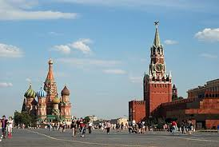

До кольорової гамми райдуги входять:
Ки́їв— столиця України, одне з найбільших і найстаріших міст Європи. Розташований у середній течії Дніпра, у північній Наддніпрянщині. Політичний, соціально-економічний, транспортний та освітньо-науковий центр країни. Окрема адміністративно-територіальна одиниця в складі України й адміністративний центр Київської області. Районний центр Києво-Святошинського району. Адміністративно до складу Київської області не входить. Місце розташування центральних органів влади України, іноземних місій, штаб-квартир більшості підприємств і громадських об'єднань, що працюють в Україні. За «Повістю временних літ», Київ заснував полянський князь Кий зі своїми братами Щеком і Хоривом та сестрою Либіддю. Згідно з археологічними даними та писемними джерелами, початок безперервного розвитку Києва датується 2-ю половиною V ст. — 1-ю половиною VI ст.; осередком розширення Києва була гора Замкова[7]. Був столицею Русі, Київського князівства, Великого князівства Руського, Української Народної Республіки, Української Держави та Української Радянської Соціалістичної Республіки. Також був адміністративним центром однойменного литовсько-польського воєводства, козацького полку, російської губернії, радянської округи, німецької генеральної округи та радянської області. Один із найстаріших історичних центрів Східної Європи та християнства — Софійський собор — та Києво-Печерська лавра внесено до списку Світової спадщини ЮНЕСКО.
Москва́ — столиця Росії, місто федерального значення, адміністративний центр Центрального федерального округу і центр Московської області, до складу якої не входить. Найбільше за чисельністю населення місто Росії і її суб'єкт - 12 692 466[2] чол. (2020), найбільш населене з міст, повністю розташованих в Європі, входить в десятку міст світу за чисельністю населення, найбільше російськомовне місто в світі. Центр Московської міської агломерації. Центр Російської православної церкви. Історична столиця Великого князівства Московського, Російського царства, Російської імперії (в 1728-1730 роках), Радянської Росії і СРСР. Місто-герой. У Москві знаходяться федеральні органи державної влади Російської Федерації (за винятком Конституційного суду), посольства іноземних держав, штаб-квартири більшості найбільших російських комерційних організацій і громадських об'єднань.  Розташована на заході Росії, на річці Москві в центрі Східно-Європейської рівнини, в межиріччі Оки і Волги. Як суб'єкт федерації, Москва межує з Московської і Калузької областями. Москва - найпопулярніший туристичний центр Росії. Кремль, Красна площа, Новодівочий монастир і Церква Вознесіння в Коломенському входять в список об'єктів всесвітньої спадщини ЮНЕСКО. Вона є найважливішим транспортним вузлом: місто обслуговують 6 аеропортів, 9 залізничних вокзалів, 3 річкових порти (є річкове сполучення з морями басейнів Атлантичного і Північного Льодовитого океанів). З 1935 року в Москві працює метрополітен. Москва - спортивний центр країни. У 1980 році в Москві пройшли XXII літні Олімпійські ігри, а в 2018 місто стало одним з господарів чемпіонату світу з футболу.
Перша згадка назви міста згадується в Іпатіївському літопису під 1147 р. у формі знахідного відмінка московь (рече приди ко мнѣ брате въ московь)[3]. Як вважають дослідники, слово «Москва» належало раніше до давньоруського типу відмінювання на *-ū-, називний відмінок якого закінчувався на -ы. Наприклад, *бры (суч. брова), боукы (суч. буква), *кры (суч. кров), любы (суч. любов), свекры (суч. свекруха), цьркы (суч. церква) і ін. Таким чином, найдавнішою формою топоніма мала бути незасвідчена в писемних пам'ятках форма *Москы. Уже в дуже ранню епоху форма називного відмінка даного типу відмінювання витіснилася формою знахідного. Для цієї стадії є засвідчені форми колишнього знахідного відмінка «Москъвь» і «Московь», звідки в іноземних мовах виникли назви типу англ. Moscow, нім. Moskau, фр. Moscou. Надалі тип відмінювання на *-ū- взагалі припинив своє існування: лексеми, які до нього належали, влилися в більш продуктивні типи на *-ĭ- (кров, любов) і *-ā- (буква, брова, бруква, смоква, ботва, плотва, церква, морква, свекруха, а також Москва). Узвичаєння варіанту «Москва» відносять до XIV століття[3]. У теперішній час загальнопризнаною є думка про вторинність назви міста стосовно гідроніма «Москва». Певність у цьому існувала здавна: ще в літературній пам'ятці кінця XVI — початку XVII ст. «Повѣсть о зачалѣ Москвы» повідомляється, що великий князь Юрій Володимирович повелів содѣлать малъ деревянъ градъ и прозва его званіємъ Москва-градъ по имени рѣки, текущія подъ нимъ[3]. Проте, в XVII—XVIII існувало кілька «кабінетних» етимологій, які намагалися пояснити назву міста як первинну (їхній огляд наводив І. Є. Забєлін)[3]. Ще до заснування города на Боровицькому пагорбі дещо західніше було розташоване село Кучково, назване так по імені власника, боярина Стефана Іванова Кучки. Нетривалий час назви «Москва» і «Кучково» вживалися паралельно, про що свідчить літопис під 1176 р. (Куцковъ, рекше Москва). Вихід з ужитку топоніма «Кучково» пов'язують зі стратою Кучки і відходом його земель до Долгорукого: у ті часи зв'язок назви селення з ім'ям власника був безпосереднім, тому стара назва втратила сенс[3]. Вид Москви з Міжнародної космічної станції, 29 січня 2014 Існують кілька гіпотез походження назви річки «Москва»: балтійська, слов'янська, фінська[4]. За найбільш переконливою гіпотезою, розробленою В. М. Топоровим, назва «Москва» має балтійську етимологію. Відоме, що район сучасної Москви лежав у східній частині розселення балтійського племені голядь, окрім того, балтійська етимологія з великою часткою ймовірності припускається і для багатьох інших гідронімів Московської області[3]. Згідно з нею, реконструйовані давні форми гідроніма: Mask-(u)va, Mask-ava чи Mazg-(u)va, Mazgava, що мають значення «дещо багнисте, сльотаве, мокре, в'язке». Оскільки в межах стародавнього міста Москви такий привід дали два місця — простір на низинних берегах річки Неглинки та особливо простір навпроти Кремля, за Москвою-рікою, що заливали весною водою, яка не висихала до середини літа, утворюючи цим болотисту місцевість — «смердюче багно»[5]. Проте, існує й інше тлумачення реконструйованих балтійських форм: аналогічно тому, як слов'янський корінь в'яз- означає не тільки багнистість (в'язнути), але й звивистість (в'язати, зав'язувати), таке ж двоїсте значення має і балтійський корінь mazg- (лит. mazgati — «мити», але mãzgas — «вузол»).
Варша́ва (пол. Warszawa) — столиця Польщі з 1596 року, порт на річці Вісла, адміністративний центр Мазовецького воєводства. Місто є місцем розташування центральних органів влади Республіки Польща, іноземних місій, штаб-квартир значної кількості підприємств та громадських об'єднань, що працюють в Польщі. Варшава з населенням 2 100 000 (2018)[1] жителів є найбільшим містом Польщі й утворює другу найбільшу агломерацію в країні (після Катовіцької). Розвинені машинобудування (автобудування, електротехнічне та ін.), металообробка і металургія, хімічна, парфумерна, поліграфічна, легка промисловість. Університет (1818). Національний музей (з музеєм До. Дуніковського), археологічний музей. «Театр Велькі», «Театр Польскі», «Театр народови» та ін. У місті щороку проходить міжнародний музичний фестиваль «Варшавська осінь» (з 1956). Перші поселення на території сучасної Варшави відносять до X століття. На початку XV—XVI століть столиця Мазовецького князівства, в XVI — початку XIX століть — всієї Польщі, в 1807—13 роках — Варшавського князівства, з 1815 р. — Королівства Польського (у складі Російської імперії). Після сильних руйнацій під час 2-ї світової війни відновлені: Старе місто, королівський замок XVI—XVII століть, багато костелів, палаци і парки; ансамбль Маршалковської вулиці (1960-ті рр.). Історичний центр Варшави належить до списку Світової спадщини ЮНЕСКО.